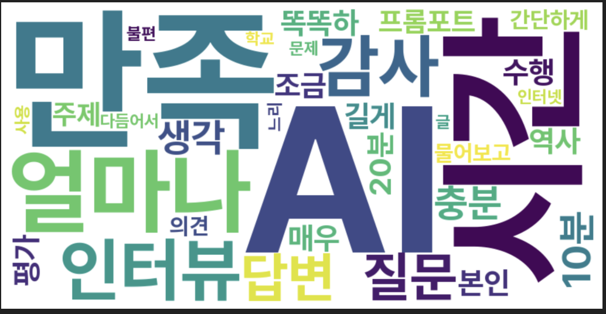

1. 조사 개요
조사 동기 및 목적
- 최근 AI 활용이 급증함에 따라, 학교 현장에서 AI는 중요한 학습 도구로 부상했다.
- 미림마이스터고 1학년 4반 학생들이 실제로 AI를 어떻게 사용하는지, 특히 프롬프트 작성 및 질문 구성/수정 방식을 탐구하고자 했다.
- 프롬프트의 구체성과 명확성이 AI 응답의 질에 미치는 영향을 분석하여, 향후 AI 활용 수업 방향을 제시하고 학생들의 효과적인 AI 활용을 돕고자 했다.
- 생성형 AI 시대에 요구되는 디지털 리터러시 능력 향상을 위한 기초 자료로 활용될 것이다.
디지털 리터러시란?
단순히 컴퓨터나 스마트폰을 잘 다루는 것을 넘어, 디지털 도구를 비판적으로 이해하고, 정보를 효과적으로 활용하며, 문제 해결이나 창의적 사고를 적용할 수 있는 종합적인 능력이다.
예: AI에게 원하는 정보를 얻기 위해 질문을 구조화하거나 반복적으로 조정하는 과정에서 디지털 리터러시가 발휘된다.
2. 조사 설계
조사 기간
2025년 5월 1일 ~ 5월 17일
(AI 활용 수업 직후 신속 조사)
조사 대상
미림마이스터고 1학년 4반 18명 (남/여)
(AI 활용 수업 경험 학생)
조사 방법
설문조사 (온라인/종이) + 개별 인터뷰 병행
(AI 사용 경험 및 전략 심층 파악)
3. 주요 발견 1: 프롬프트의 중요성 인식
프롬프트 구체성, 얼마나 중요할까?
AI 질문 시 프롬프트 구체성의 중요도 (5점 척도)
응답자의 94.4%가 프롬프트 구체성을 "중요하다" 이상으로 인식했다. AI 활용 시 명확한 지시가 필요하다는 강한 공감대가 확인되었다.
AI의 한계, 고려하면 답변이 달라질까?
AI의 한계 고려가 효과적 답변에 도움되는 정도 (5점 척도)
AI의 한계를 고려하는 것이 효과적인 프롬프트 작성에 도움된다는 인식이 77.8% (도움이 된다 50% + 매우 도움이 된다 27.8%)로 우세했다. 기술적 제약 이해가 사용자-AI 상호작용 최적화에 기여함을 확인했다.
4. 주요 발견 2: 프롬프트 개선 전략
만족스럽지 않은 답변, 어떻게 개선할까?
AI로부터 만족스럽지 못한 답변을 받았을 때, 프롬프트 수정/개선 방법
부적절한 답변 수신 시 "질문에 더 자세한 정보나 맥락 추가" (77.8%)가 가장 효과적인 개선 방법으로 인식되었다. AI의 이해도 향상을 위한 데이터 풍부화의 필요성이 강조되었다.
학생들의 생생한 목소리 🗣️
김희성 학생

- 만족스러운 답변까지 평균 약 10분 소요.
- 가장 오래 걸린 경우: 역사 수행평가 주제 구성 시 약 20분 이상 소요, 결과는 매우 만족.
- 프롬프트 방식: 주제 간단 제시 → AI 의견 요청 → 해당 내용 바탕으로 글쓰기 요청.
- 불편한 점: 학교 인터넷 환경으로 인한 AI 응답 속도 저하.
박주혁 학생

- 초보자 조언: "프롬프트를 최대한 상세하고 구체적으로 작성하는 것이 중요!"
- 사례: '성공적인 직업생활' 수업 중 로고 제작 요청 시, 상세 설명(스타일, 컬러, 용도 등) 포함 → 모던하고 깔끔한 결과물에 만족.
- 실수 경험: 여행지 추천 시 지역 미명시 → 광범위한 정보로 혼란. 지역 구체화 후 유용한 정보 획득.
인터뷰 핵심 키워드: 워드클라우드
학생들의 공통된 경험 및 인식
"처음엔 그냥 막연하게 물었더니 엉뚱한 답이 나와서, 두세 번 질문을 바꿔 써야 했다." (한 학생)
"AI야, 환경 문제 알려줘"라는 질문을 "기후 변화로 인한 해수면 상승 원인을 중학생도 이해할 수 있게 설명해줘"로 바꾼 뒤에야 원하는 답을 얻을 수 있었다. (한 학생)
5. 주요 발견 3: AI 활용 현황 및 경험
AI, 얼마나 어떻게 사용하고 있을까? (종합)
- 조사 대상 18명 중 16명이 AI를 주기적으로 활용하고 있었다.
- 14명 (77.8%)이 "질문이 구체적일수록 더 만족스러운 답변을 얻었다"고 응답했다.
- 질문을 한 번에 만족스럽게 작성하지 못한 경우, 약 80%의 학생이 질문을 반복 수정하며 결과 개선을 시도했다.
- 평균 10분 정도 AI와 상호작용 후 만족스러운 답변을 획득했다.
- 가장 오래 걸렸던 사례는 역사 수행평가 주제 구성으로, 약 20분이 소요되었다.
- 학생들은 "질문 내용이 명확하면 AI가 더 정확하게 반응한다"는 점을 체감했으며, 질문을 반복적으로 수정하여 원하는 방향으로 AI를 조정하는 과정에 만족감을 느꼈다.
6. 결론 및 제언
주요 결론
- 학생들은 AI 프롬프트의 명확성과 구체성이 답변의 질에 큰 영향을 미친다는 사실을 명확히 인식하고 있었다.
- AI의 한계를 경험적으로 체감하고, 이를 보완하기 위해 스스로 정보를 확인하고 수정하는 태도를 보였다. (예: 역사 과제 시 교과서 내용과 비교)
- 모호한 질문에서 구체적이고 상황에 맞는 질문으로 발전시키는 학습 과정을 통해 디지털 리터러시와 메타인지 능력을 향상시키고 있었다.
- 이 조사는 학생들이 AI를 활용하며 사고하고 문제를 해결하는 방식을 보여주는 자료가 되었다.
향후 AI 교육 방향 제언
AI 교육은 단순 기능 중심을 넘어서 다음과 같은 능력을 기르는 방향으로 나아가야 한다:
- 질문 설계 능력 배양.
- AI 답변에 대한 비판적 결과 해석 능력 강화.
- 획득한 정보를 바탕으로 한 창의적 정보 재구성 능력 육성.
본 조사는 실제 사례를 바탕으로 학생들의 전략적 사고방식을 파악하고, AI 교육의 방향성을 설정하는 데 실질적인 기초 자료로 활용될 수 있으며, 디지털 시대를 살아가는 학생들에게 필요한 핵심 역량 확인에 교육적 가치가 있다.
7. 참고 자료
Chat GPT, Gemini, Perplexity